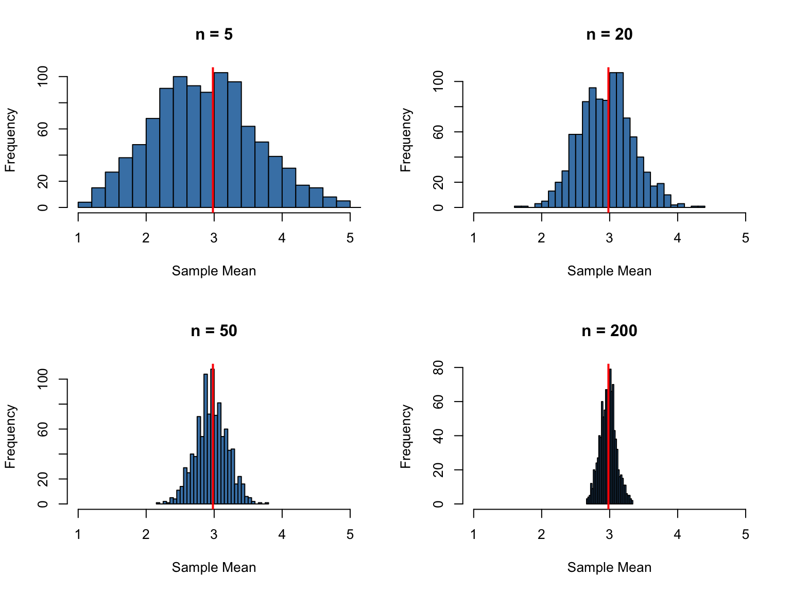
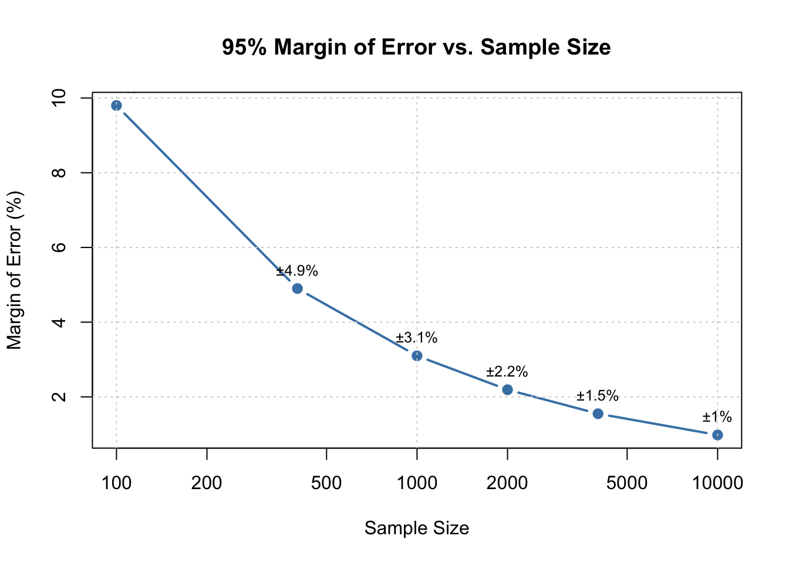
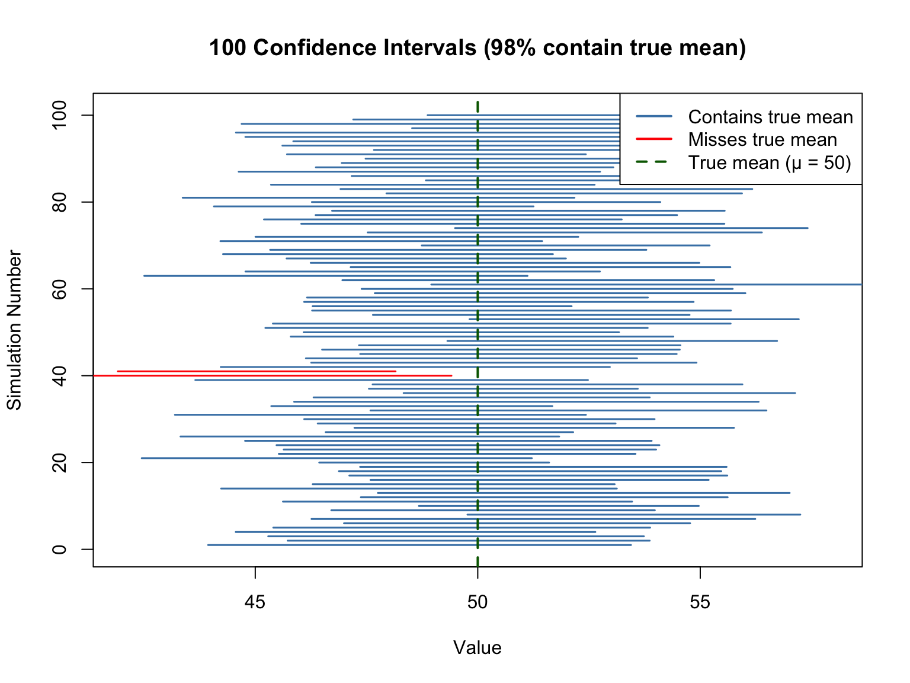

Science often works by measuring samples to learn about populations. We cannot measure every protein in a cell, every patient with a disease, or every fish in the ocean. Instead, we take samples and use statistical inference to draw conclusions about the larger populations from which they came.
This creates a fundamental challenge: sample statistics vary from sample to sample, even when samples come from the same population. If you take two different random samples from a population and calculate their means, you will almost certainly get two different values. How, then, can we say anything reliable about the population?
The answer lies in understanding the sampling distribution—the distribution of a statistic across all possible samples of a given size.
14.2 Parameters and Statistics
A parameter is a numerical characteristic of a population—the true population mean \(\mu\), the true population standard deviation \(\sigma\), the true proportion \(p\). Parameters are typically fixed but unknown.
A statistic is a numerical characteristic of a sample—the sample mean \(\bar{x}\), the sample standard deviation \(s\), the sample proportion \(\hat{p}\). Statistics are calculated from data and vary from sample to sample.
We use statistics to estimate parameters. The sample mean \(\bar{x}\) estimates the population mean \(\mu\). The sample standard deviation \(s\) estimates the population standard deviation \(\sigma\). These estimates will rarely equal the true parameter values exactly, but we can quantify how close they are likely to be.
14.3 Point Estimates
A point estimate is a single number used as our best guess for a parameter. The sample mean is a natural point estimate for the population mean:
\[\bar{x} = \frac{1}{n} \sum_{i=1}^{n} x_i\]
What makes a good estimator? Ideally, an estimator should be:
Unbiased: On average, across many samples, the estimator equals the true parameter. The sample mean is an unbiased estimator of the population mean.
Efficient: Among unbiased estimators, it has the smallest variance. The sample mean is the most efficient estimator of a normal mean.
Consistent: As sample size increases, the estimator converges to the true parameter value.
14.4 The Sampling Distribution of the Mean
Imagine drawing all possible samples of size \(n\) from a population and calculating the mean of each. The distribution of these means is the sampling distribution of the mean.
The sampling distribution has remarkable properties:
Its mean equals the population mean: \(E[\bar{X}] = \mu\)
Its standard deviation (the standard error) equals: \(SE = \frac{\sigma}{\sqrt{n}}\)
For large samples, it is approximately normal (Central Limit Theorem)
Code
# Demonstrate sampling distributionset.seed(32)# Create a populationtrue_pop <-rpois(n =10000, lambda =3)pop_mean <-mean(true_pop)pop_sd <-sd(true_pop)# Take many samples and compute their meanssample_sizes <-c(5, 20, 50, 200)par(mfrow =c(2, 2))for (n in sample_sizes) { sample_means <-replicate(1000, mean(sample(true_pop, n)))hist(sample_means, breaks =30, main =paste("n =", n),xlab ="Sample Mean", col ="steelblue",xlim =c(1, 5))abline(v = pop_mean, col ="red", lwd =2)}

Figure 14.1: Sampling distributions of the mean become narrower and more normal as sample size increases
As sample size increases, the sampling distribution becomes narrower (smaller standard error) and more normal in shape. This is why larger samples give more precise estimates.
14.5 Standard Error
The standard error (SE) measures the variability of a statistic across samples. For the sample mean:
\[SE_{\bar{x}} = \frac{\sigma}{\sqrt{n}}\]
Since we usually do not know \(\sigma\), we estimate the standard error using the sample standard deviation:
\[\widehat{SE}_{\bar{x}} = \frac{s}{\sqrt{n}}\]
The standard error shrinks as sample size increases, but following a square root relationship. To halve the standard error, you need to quadruple the sample size.
Code
# Demonstrate how SE changes with sample sizeset.seed(32)true_pop <-rpois(n =1000, lambda =5)# Sample size of 5samps_5 <-replicate(n =50, sample(true_pop, size =5))means_5 <-apply(samps_5, 2, mean)se_5 <-sd(means_5)# Sample size of 50samps_50 <-replicate(n =50, sample(true_pop, size =50))means_50 <-apply(samps_50, 2, mean)se_50 <-sd(means_50)cat("Standard error with n=5:", round(se_5, 3), "\n")
Standard error with n=5: 0.919
Code
cat("Standard error with n=50:", round(se_50, 3), "\n")
Figure 14.2: The standard error decreases as sample size increases
14.6 Confidence Intervals
A point estimate tells us our best guess, but not how uncertain we are. A confidence interval provides a range of plausible values for the parameter along with a measure of confidence.
A 95% confidence interval for the population mean, when the population is normally distributed or the sample is large, is:
where \(t_{\alpha/2}\) is the critical value from the t-distribution with \(n-1\) degrees of freedom.
Figure 14.3: Confidence intervals provide a range of plausible values for the parameter
The interpretation requires care: a 95% confidence interval means that if we repeated this procedure many times, 95% of the resulting intervals would contain the true parameter. Any particular interval either does or does not contain the true value—we just don’t know which.
Figure 14.4: The interpretation of confidence intervals requires understanding what is random
14.7 The Central Limit Theorem in Practice
The Central Limit Theorem (CLT) is one of the most remarkable results in statistics. It states that the sampling distribution of the mean approaches a normal distribution as sample size increases, regardless of the shape of the underlying population distribution.
This is why confidence intervals work. This is why the normal distribution appears everywhere in statistics. And understanding the CLT in practice—through examples like polling and surveys—builds deep intuition for statistical inference.
The CLT Demonstrated
Let’s see the CLT in action with a highly non-normal distribution. We’ll sample from an exponential distribution (heavily right-skewed) and watch how the sampling distribution of the mean becomes normal:
Code
set.seed(42)# Exponential distribution (very skewed)rate <-0.5pop_mean <-1/rate # True mean = 2par(mfrow =c(2, 2))# Original populationx <-rexp(10000, rate = rate)hist(x, breaks =50, main ="Original Distribution (Exponential)",xlab ="Value", col ="gray80", probability =TRUE)curve(dexp(x, rate = rate), add =TRUE, col ="red", lwd =2)# Sample means for different nfor (n inc(5, 30, 100)) { sample_means <-replicate(5000, mean(rexp(n, rate = rate)))hist(sample_means, breaks =50, probability =TRUE,main =paste("Sampling Distribution (n =", n, ")"),xlab ="Sample Mean", col ="steelblue")# Overlay normal curve with theoretical SE theoretical_se <- (1/rate) /sqrt(n)curve(dnorm(x, mean = pop_mean, sd = theoretical_se),add =TRUE, col ="red", lwd =2)}
Figure 14.5: The Central Limit Theorem in action: sampling distributions of means from a skewed exponential population become normal
Even with n = 30, the sampling distribution of the mean is remarkably close to normal, despite the exponential distribution being extremely skewed. By n = 100, the approximation is nearly perfect.
Margin of Error: Quantifying Precision
The margin of error (MOE) is a practical expression of sampling uncertainty. For a confidence interval around a proportion or mean, the margin of error is the half-width of the interval:
\[\text{Margin of Error} = z^* \times SE\]
For a 95% confidence interval, \(z^* \approx 1.96 \approx 2\), giving us the approximation:
\[\text{95% MOE} \approx 2 \times SE\]
For proportions, the standard error is \(SE = \sqrt{\frac{p(1-p)}{n}}\), so:
Political polling provides an excellent practical example of sampling and the CLT. When a poll reports “48% of voters support Candidate A, with a margin of error of ±3%,” they are making a statistical inference from a sample to a population.
Let’s simulate an election poll:
Code
set.seed(123)# True population proportion (unknown in real life)true_proportion <-0.52# 52% actually support the candidate# Simulate a poll of 1000 likely votersn <-1000poll_sample <-rbinom(1, size = n, prob = true_proportion) / n# Calculate margin of errorse <-sqrt(poll_sample * (1- poll_sample) / n)moe <-1.96* secat("Poll result:", round(poll_sample *100, 1), "%\n")
Poll result: 53.2 %
Code
cat("Margin of error: ±", round(moe *100, 1), "%\n")
The margin of error is inversely proportional to \(\sqrt{n}\). This has important practical implications:
Code
# Margin of error as a function of sample sizesample_sizes <-c(100, 400, 1000, 2000, 4000, 10000)p <-0.5# Conservative estimatemoe_values <-1.96*sqrt(p * (1- p) / sample_sizes) *100plot(sample_sizes, moe_values, type ="b", pch =19,xlab ="Sample Size", ylab ="Margin of Error (%)",main ="95% Margin of Error vs. Sample Size",log ="x", col ="steelblue", lwd =2)grid()# Add labelstext(sample_sizes, moe_values +0.5,paste0("±", round(moe_values, 1), "%"),cex =0.8)

Figure 14.6: Margin of error decreases with sample size, but with diminishing returns
Notice the diminishing returns: going from n = 100 to n = 400 cuts the margin of error in half (from ±10% to ±5%). But to halve it again (to ±2.5%), you need n = 1,600—four times as many respondents. This is why most national polls use samples of 1,000–2,000: it provides reasonable precision (±2-3%) at manageable cost.
Interpreting Polls: Uncertainty in Action
When two candidates are within the margin of error of each other, the poll results are consistent with either candidate leading. This is not a flaw of polling—it reflects genuine uncertainty.
Code
set.seed(456)# Simulate many polls from the same populationtrue_p <-0.48# Candidate A's true supportn_poll <-1000n_polls <-100polls <-replicate(n_polls, { sample_p <-rbinom(1, n_poll, true_p) / n_poll se <-sqrt(sample_p * (1- sample_p) / n_poll)c(estimate = sample_p, lower = sample_p -1.96*se, upper = sample_p +1.96*se)})polls_df <-data.frame(poll =1:n_polls,estimate = polls["estimate", ],lower = polls["lower", ],upper = polls["upper", ])# How many CIs contain the true value?coverage <-mean(polls_df$lower <= true_p & polls_df$upper >= true_p)# Plot first 30 pollsggplot(polls_df[1:30, ], aes(x = poll, y = estimate)) +geom_hline(yintercept = true_p, color ="red", linetype ="dashed", linewidth =1) +geom_hline(yintercept =0.5, color ="gray50", linetype ="dotted") +geom_errorbar(aes(ymin = lower, ymax = upper), width =0.3, alpha =0.6) +geom_point(size =2) +labs(title ="95% Confidence Intervals from 30 Polls",subtitle =paste0("True proportion = ", true_p*100, "% | ", round(coverage*100),"% of all CIs contain true value"),x ="Poll Number",y ="Estimated Proportion" ) +scale_y_continuous(labels = scales::percent_format()) +theme_minimal()
Figure 14.7: Simulated polls showing how confidence intervals vary: about 95% contain the true proportion
In repeated sampling, approximately 95% of confidence intervals contain the true value—but any single interval either does or does not contain it. This is the frequentist interpretation of confidence intervals.
Correct Language for Confidence Intervals
Confidence intervals are frequently misinterpreted. The key insight is understanding what is random before and after data collection:
What Is Random?
Before data collection: The confidence interval is random—we don’t yet know where it will fall. The population parameter \(\mu\) is fixed (though unknown).
After data collection: The confidence interval is now fixed—it’s just two numbers like [48.2, 52.1]. It either contains the true parameter or it doesn’t. There is no probability involved anymore.
Consider this analogy: Before flipping a coin, there’s a 50% probability of heads. After flipping, the coin shows what it shows—there’s no longer any probability, just an outcome.
The correct interpretation of a 95% confidence interval is:
“If we repeated this sampling procedure many times, 95% of the resulting intervals would contain the true population parameter.”
Incorrect interpretations (which are very common):
❌ “There is a 95% probability that \(\mu\) is in this interval”
❌ “We are 95% confident that \(\mu\) is between these values”
❌ “95% of the data falls within this interval”
The first two statements incorrectly assign probability to the parameter, which is fixed. The third confuses a confidence interval for a reference range.
Code
# Visual demonstration: Monte Carlo simulation of CI coverageset.seed(2024)# True population parameterstrue_mean <-50true_sd <-10n <-25# Sample sizen_simulations <-100# Storage for confidence intervalsci_data <-data.frame(sim =1:n_simulations,lower =numeric(n_simulations),upper =numeric(n_simulations),contains_true =logical(n_simulations))# Generate 100 confidence intervalsfor (i in1:n_simulations) { sample_data <-rnorm(n, mean = true_mean, sd = true_sd) ci <-t.test(sample_data)$conf.int ci_data$lower[i] <- ci[1] ci_data$upper[i] <- ci[2] ci_data$contains_true[i] <- (ci[1] <= true_mean) & (ci[2] >= true_mean)}# Count how many contain the true meancoverage <-mean(ci_data$contains_true)# Plotplot(NULL, xlim =c(42, 58), ylim =c(0, n_simulations +1),xlab ="Value", ylab ="Simulation Number",main =paste0("100 Confidence Intervals (", round(coverage*100), "% contain true mean)"))# Draw intervalsfor (i in1:n_simulations) { color <-ifelse(ci_data$contains_true[i], "steelblue", "red")segments(ci_data$lower[i], i, ci_data$upper[i], i, col = color, lwd =1.5)}# True mean lineabline(v = true_mean, col ="darkgreen", lwd =2, lty =2)legend("topright",legend =c("Contains true mean", "Misses true mean", "True mean (μ = 50)"),col =c("steelblue", "red", "darkgreen"),lwd =c(2, 2, 2), lty =c(1, 1, 2))

Figure 14.8: Monte Carlo demonstration of confidence interval coverage: about 95% of intervals (blue) contain the true mean
In this simulation, each horizontal line represents a 95% confidence interval from a different random sample. The red intervals are the ~5% that failed to capture the true mean. Once calculated, each interval either contains the true value (blue) or doesn’t (red)—there’s no probability about it anymore.
The Practical Value of Margin of Error
Understanding margin of error helps you:
Interpret reported results: A poll showing 52% vs. 48% with ±3% MOE does not clearly favor either candidate
Plan studies: Use \(n \approx \frac{1}{\text{MOE}^2}\) for proportions near 0.5 to achieve a desired margin of error
Communicate uncertainty: Always report intervals, not just point estimates
Make decisions: Consider whether differences are within or beyond the margin of error
For sample size planning, if you want a specific margin of error:
Code
# Required sample size for different margins of error (95% CI)desired_moe <-c(0.10, 0.05, 0.03, 0.02, 0.01)required_n <-ceiling((1.96/ desired_moe)^2*0.25) # 0.25 = p(1-p) at p=0.5data.frame(`Margin of Error`=paste0("±", desired_moe *100, "%"),`Required n`= required_n)
These calculations assume simple random sampling. Real-world surveys often use complex sampling designs that affect the effective sample size.
14.8 Coefficient of Variation
When comparing variability across groups with different means, the standard deviation alone can be misleading. The coefficient of variation (CV) standardizes variability relative to the mean:
\[CV = \frac{s}{\bar{x}} \times 100\%\]
A CV of 10% means the standard deviation is 10% of the mean. This allows meaningful comparisons between groups or measurements on different scales.
14.9 Percentiles and Quantiles
Percentiles describe the relative position of values within a distribution. The \(p\)th percentile is the value below which \(p\)% of the data falls. The 50th percentile is the median, the 25th percentile is the first quartile, and the 75th percentile is the third quartile.
Quantiles divide data into equal parts. Quartiles divide into four parts, deciles into ten parts, percentiles into one hundred parts.
Min. 1st Qu. Median Mean 3rd Qu. Max.
12.00 19.00 26.50 27.20 34.25 45.00
Quantiles form the basis for many statistical procedures, including constructing confidence intervals and calculating p-values.
14.10 Bias and Variability
Two distinct types of error affect estimates:
Bias is systematic error—the tendency for an estimator to consistently over- or underestimate the true parameter. An unbiased estimator has zero bias: its average value across all possible samples equals the true parameter.
Variability is random error—the spread of estimates around their average value. Low variability means estimates cluster tightly together.
The ideal estimator has both low bias and low variability. Sometimes there is a tradeoff: a slightly biased estimator might have much lower variability, resulting in estimates that are closer to the truth on average.
The mean squared error (MSE) combines both sources of error:
\[MSE = Bias^2 + Variance\]
14.11 The Bootstrap: Resampling for Estimation
The bootstrap, introduced by Bradley Efron in 1979, is a powerful resampling method for estimating standard errors and constructing confidence intervals when analytical formulas are unavailable or assumptions are questionable (Efron 1979).
The key insight is elegant: we can estimate the sampling distribution of a statistic by repeatedly resampling from our observed data. If our sample is representative of the population, then samples drawn from our sample (with replacement) should behave like samples drawn from the population.
The Bootstrap Algorithm
Take a random sample with replacement from your data (same size as original)
Calculate the statistic of interest on this resampled data
Repeat steps 1-2 many times (typically 1000-10000)
The distribution of bootstrap statistics approximates the sampling distribution
Code
# Bootstrap estimation of the sampling distribution of the meanset.seed(123)# Our observed sampleoriginal_sample <-c(23, 31, 28, 35, 42, 29, 33, 27, 38, 31)n <-length(original_sample)# Bootstrap: resample with replacementn_bootstrap <-5000bootstrap_means <-numeric(n_bootstrap)for (i in1:n_bootstrap) { boot_sample <-sample(original_sample, size = n, replace =TRUE) bootstrap_means[i] <-mean(boot_sample)}# Compare bootstrap distribution to observed statisticshist(bootstrap_means, breaks =40, col ="steelblue",main ="Bootstrap Distribution of the Mean",xlab ="Sample Mean")abline(v =mean(original_sample), col ="red", lwd =2)abline(v =quantile(bootstrap_means, c(0.025, 0.975)), col ="darkgreen", lwd =2, lty =2)cat("Original sample mean:", mean(original_sample), "\n")
Figure 14.9: Bootstrap distribution of the sample mean with 95% confidence interval bounds
Bootstrap Confidence Intervals
The bootstrap provides several methods for constructing confidence intervals:
Percentile method: Use the 2.5th and 97.5th percentiles of the bootstrap distribution as the 95% CI bounds. This is the simplest approach shown above.
Basic (reverse percentile) method: Reflects the percentiles around the original estimate to correct for certain types of bias.
BCa (bias-corrected and accelerated): A more sophisticated method that adjusts for both bias and skewness in the bootstrap distribution. This is often preferred when the sampling distribution is not symmetric.
Code
# Using the boot package for more sophisticated bootstrap CIlibrary(boot)# Define statistic functionmean_stat <-function(data, indices) {mean(data[indices])}# Run bootstrapboot_result <-boot(original_sample, mean_stat, R =5000)# Different CI methodsboot.ci(boot_result, type =c("perc", "basic", "bca"))
BOOTSTRAP CONFIDENCE INTERVAL CALCULATIONS
Based on 5000 bootstrap replicates
CALL :
boot.ci(boot.out = boot_result, type = c("perc", "basic", "bca"))
Intervals :
Level Basic Percentile BCa
95% (28.3, 34.9 ) (28.5, 35.1 ) (28.5, 35.1 )
Calculations and Intervals on Original Scale
When to Use the Bootstrap
The bootstrap is particularly valuable when:
The sampling distribution of your statistic is unknown or complex
Sample sizes are small and normality assumptions are questionable
You are estimating something other than a mean (e.g., median, correlation, regression coefficients)
Analytical formulas for standard errors do not exist
However, the bootstrap has limitations. It assumes your sample is representative of the population and works poorly with very small samples (n < 10-15) or when estimating extreme quantiles.
14.12 Maximum Likelihood Estimation
Maximum likelihood estimation (MLE) provides a principled framework for parameter estimation. The likelihood function measures how probable the observed data would be for different parameter values. MLE finds the parameter values that make the observed data most probable.
For a sample \(x_1, x_2, \ldots, x_n\) from a distribution with parameter \(\theta\), the likelihood function is:
MLEs have desirable properties: they are consistent (converge to true values as n increases) and asymptotically efficient (achieve the smallest possible variance for large samples).
14.13 Simulation-Based Understanding of Estimation
Simulation provides powerful intuition for statistical concepts. By repeatedly sampling from known populations, we can directly observe sampling distributions.
Code
# Exploring properties of estimators through simulationset.seed(456)# True population parameterspop_mean <-50pop_sd <-10# Simulate many samples and compute estimatesn_samples <-2000sample_sizes <-c(5, 15, 50)par(mfrow =c(2, 3))for (n in sample_sizes) {# Collect sample means sample_means <-replicate(n_samples, { samp <-rnorm(n, mean = pop_mean, sd = pop_sd)mean(samp) })# Plot distribution of sample meanshist(sample_means, breaks =40, col ="steelblue",main =paste("Sample Means (n =", n, ")"),xlab ="Sample Mean", xlim =c(35, 65))abline(v = pop_mean, col ="red", lwd =2)# Calculate actual SE vs theoretical actual_se <-sd(sample_means) theoretical_se <- pop_sd /sqrt(n)legend("topright", bty ="n", cex =0.8,legend =c(paste("Actual SE:", round(actual_se, 2)),paste("Theoretical:", round(theoretical_se, 2))))}# Now do the same for sample standard deviationsfor (n in sample_sizes) {# Collect sample SDs sample_sds <-replicate(n_samples, { samp <-rnorm(n, mean = pop_mean, sd = pop_sd)sd(samp) })hist(sample_sds, breaks =40, col ="coral",main =paste("Sample SDs (n =", n, ")"),xlab ="Sample SD")abline(v = pop_sd, col ="red", lwd =2)}
Figure 14.10: Properties of estimators through simulation: sample means are unbiased and their variability decreases with n
This simulation reveals several important facts: 1. Sample means are unbiased (centered on the population mean) 2. The spread of sample means decreases as \(\sqrt{n}\) 3. Sample standard deviations are slightly biased for small samples but become unbiased as n increases
14.14 Principles of Experimental Design
Good statistical analysis cannot rescue a poorly designed study. The way you collect data fundamentally determines what conclusions you can draw. Understanding key design principles is essential for planning experiments that yield valid, interpretable results.
Randomization
Randomization assigns subjects to treatment groups by chance, ensuring that treatment groups are comparable. Without randomization, systematic differences between groups (confounders) can bias results.
Code
# Randomly assign 20 subjects to treatment or controlset.seed(42)subjects <-1:20treatment_group <-sample(subjects, size =10)control_group <-setdiff(subjects, treatment_group)cat("Treatment group:", treatment_group, "\n")
Treatment group: 17 5 1 10 4 2 20 18 8 7
Code
cat("Control group:", control_group, "\n")
Control group: 3 6 9 11 12 13 14 15 16 19
Randomization provides the foundation for causal inference. Without it, we can only establish associations, not causation.
Controls
Every experiment needs controls—groups that differ from treatment groups only in the variable of interest:
Negative control: Receives no treatment; establishes baseline
Positive control: Receives a treatment known to work; confirms the experimental system is functioning
Procedural control: Receives all procedures except the active ingredient (e.g., sham surgery, vehicle-only injection)
Without proper controls, you cannot determine whether observed effects are due to your treatment or some other factor.
Blinding
Blinding prevents knowledge of group assignment from influencing results:
Single-blind: Subjects do not know which treatment they receive
Double-blind: Neither subjects nor experimenters know group assignments
Triple-blind: Subjects, experimenters, and data analysts are all blinded
Blinding prevents both placebo effects (subjects’ expectations influencing outcomes) and experimenter bias (conscious or unconscious influence on measurements).
Replication
Replication means having multiple independent observations in each treatment group. Replication is essential because it:
Provides estimates of variability
Enables statistical inference
Increases precision of estimates
Allows detection of real effects
The unit of replication must match the unit of treatment. If you treat tanks with different water temperatures and measure multiple fish per tank, your replicates are tanks, not fish.
Technical vs. Biological Replicates
Technical replicates: Repeated measurements of the same sample (e.g., running the same sample through a machine twice)
Biological replicates: Independent samples from different individuals or experimental units
Technical replicates measure precision of the measurement process. Biological replicates measure biological variability and enable inference to the population. Do not confuse them!
Blocking
Blocking groups experimental units that are similar to each other, then applies all treatments within each block. This reduces variability by accounting for known sources of heterogeneity.
Common blocking factors: - Time (experimental batches, days) - Location (different incubators, growth chambers) - Individual (paired designs, repeated measures)
Code
# Randomized complete block design# 4 treatments applied within each of 3 blocksset.seed(123)blocks <-1:3treatments <-c("A", "B", "C", "D")design <-expand.grid(Block = blocks, Treatment = treatments)design$Order <-NAfor (b in blocks) { block_rows <- design$Block == b design$Order[block_rows] <-sample(1:4)}design[order(design$Block, design$Order), ]
Block Treatment Order
7 1 C 1
10 1 D 2
1 1 A 3
4 1 B 4
11 2 D 1
5 2 B 2
2 2 A 3
8 2 C 4
6 3 B 1
9 3 C 2
3 3 A 3
12 3 D 4
Blocking is particularly valuable when blocks correspond to major sources of variation (e.g., different labs, experimental days, genetic backgrounds).
Sample Size Considerations
Determining appropriate sample size before collecting data is crucial. Too few samples waste resources by producing inconclusive results; too many waste resources by studying effects that were detectable with smaller samples.
Sample size depends on: - Effect size: The minimum meaningful difference you want to detect - Variability: The expected noise in your measurements - Significance level (\(\alpha\)): Usually 0.05 - Power: Usually 0.80 (80% chance of detecting a real effect)
Power analysis (covered in detail in a later chapter) formalizes these considerations.
14.15 Key Takeaways
Understanding sampling distributions and estimation is fundamental to statistical inference. Key points to remember:
Statistics vary from sample to sample; this variability is quantified by the standard error
Larger samples give more precise estimates (smaller standard errors)
Confidence intervals quantify uncertainty about parameter estimates
The Central Limit Theorem explains why the normal distribution appears so frequently
Both bias and variability affect the quality of estimates
The bootstrap provides a flexible, computer-intensive approach to estimation when analytical methods are limited
Maximum likelihood provides a principled framework for parameter estimation
Good experimental design—randomization, controls, blinding, proper replication—is essential for valid inference
These concepts provide the foundation for hypothesis testing and the statistical inference methods we develop in subsequent chapters.
14.16 Exercises
Exercise S.1: Standard Error and Sample Size
You are measuring the concentration of a specific protein in blood samples. From previous studies, you know the population standard deviation is approximately 15 mg/dL.
If you collect 25 samples, what is the standard error of the mean?
How many samples would you need to reduce the standard error to 2 mg/dL?
If you want to halve the standard error from part (a), how many times larger must your sample be?
Simulate this scenario: create 1000 samples of size n=25 from a normal distribution with mean 100 and SD 15, calculate the mean of each sample, and verify that the standard deviation of these means is approximately equal to the theoretical standard error
Code
# Your code here
Exercise S.2: Confidence Intervals and Interpretation
A researcher measures the wing length (mm) of 20 monarch butterflies and obtains:
Calculate the 95% confidence interval for the mean wing length
Interpret this confidence interval in words (use correct statistical language)
If you were to repeat this study 100 times, approximately how many of the resulting 95% confidence intervals would you expect to contain the true population mean?
Calculate a 99% confidence interval. How does it compare to the 95% CI and why?
Code
# Your code here
Exercise S.3: Bootstrap Confidence Intervals
Consider the following reaction times (milliseconds) for a cognitive task:
Calculate the median reaction time and a 95% confidence interval using the t-test approach (treating median as mean for this comparison)
Use the bootstrap (with at least 5000 resamples) to construct a 95% confidence interval for the median
Compare the two intervals. Which method is more appropriate for estimating the median, and why?
Create a histogram of your bootstrap distribution of medians
Use the bootstrap to estimate the standard error of the median
Code
# Your code here
Exercise S.4: Polling and Margin of Error
You are conducting a survey to estimate the proportion of biology students who plan to attend graduate school. In your random sample of 400 students, 256 indicate they plan to attend graduate school.
Calculate the sample proportion and its standard error
Construct a 95% confidence interval for the true proportion
Calculate the margin of error for your estimate
A colleague claims that the true proportion is 70%. Is this claim consistent with your data? Explain.
How large a sample would you need to achieve a margin of error of ±2% (at 95% confidence)?
Code
# Your code here
Exercise S.5: Experimental Design Critique
Read the following experimental description and identify problems with the design:
“A researcher wants to test whether a new drug reduces blood pressure. She recruits 40 volunteers and assigns the first 20 who sign up to receive the drug, and the remaining 20 to receive a placebo. The researcher measures each participant’s blood pressure and tells them which group they are in. The researcher’s assistant, who knows which participants received the drug, measures blood pressure again after 4 weeks. The average reduction in the drug group was 8 mmHg compared to 3 mmHg in the placebo group.”
For this design:
List at least three major problems with how this experiment was conducted
For each problem you identified, explain how it could bias the results
Redesign this experiment to address the problems you identified
Would technical replicates (measuring each person’s blood pressure multiple times) or biological replicates (measuring more people) be more valuable for this study? Explain.
Exercise S.6: Simulation Study of Coverage
The true “95% confidence interval” should contain the true parameter 95% of the time in repeated sampling. Let’s verify this through simulation.
Set up a simulation where you:
Choose true population parameters (e.g., mean = 50, SD = 10)
Take a random sample of size n = 20
Calculate a 95% confidence interval
Check if the interval contains the true mean
Repeat this process 1000 times
What proportion of your confidence intervals contained the true mean?
Visualize your results by plotting the first 100 confidence intervals, color-coding them by whether they contain the true mean
Repeat the simulation with n = 50 and n = 100. How does sample size affect the width of confidence intervals?
Now try a 90% confidence interval. What proportion of intervals contain the true mean?
Code
# Your code here
14.17 Additional Resources
Efron (1979) - The original bootstrap paper, a landmark in modern statistics
Irizarry (2019) - Excellent chapters on sampling and estimation with R examples
Efron, Bradley. 1979. “Bootstrap Methods: Another Look at the Jackknife.”The Annals of Statistics 7 (1): 1–26.
# Sampling and Parameter Estimation {#sec-sampling-estimation}```{r}#| echo: false#| message: falselibrary(tidyverse)theme_set(theme_minimal())```## The Problem of InferenceScience often works by measuring samples to learn about populations. We cannot measure every protein in a cell, every patient with a disease, or every fish in the ocean. Instead, we take samples and use statistical inference to draw conclusions about the larger populations from which they came.This creates a fundamental challenge: sample statistics vary from sample to sample, even when samples come from the same population. If you take two different random samples from a population and calculate their means, you will almost certainly get two different values. How, then, can we say anything reliable about the population?The answer lies in understanding the sampling distribution—the distribution of a statistic across all possible samples of a given size.## Parameters and StatisticsA **parameter** is a numerical characteristic of a population—the true population mean $\mu$, the true population standard deviation $\sigma$, the true proportion $p$. Parameters are typically fixed but unknown.A **statistic** is a numerical characteristic of a sample—the sample mean $\bar{x}$, the sample standard deviation $s$, the sample proportion $\hat{p}$. Statistics are calculated from data and vary from sample to sample.We use statistics to estimate parameters. The sample mean $\bar{x}$ estimates the population mean $\mu$. The sample standard deviation $s$ estimates the population standard deviation $\sigma$. These estimates will rarely equal the true parameter values exactly, but we can quantify how close they are likely to be.## Point EstimatesA **point estimate** is a single number used as our best guess for a parameter. The sample mean is a natural point estimate for the population mean:$$\bar{x} = \frac{1}{n} \sum_{i=1}^{n} x_i$$What makes a good estimator? Ideally, an estimator should be:**Unbiased**: On average, across many samples, the estimator equals the true parameter. The sample mean is an unbiased estimator of the population mean.**Efficient**: Among unbiased estimators, it has the smallest variance. The sample mean is the most efficient estimator of a normal mean.**Consistent**: As sample size increases, the estimator converges to the true parameter value.## The Sampling Distribution of the MeanImagine drawing all possible samples of size $n$ from a population and calculating the mean of each. The distribution of these means is the sampling distribution of the mean.The sampling distribution has remarkable properties:1. Its mean equals the population mean: $E[\bar{X}] = \mu$2. Its standard deviation (the **standard error**) equals: $SE = \frac{\sigma}{\sqrt{n}}$3. For large samples, it is approximately normal (Central Limit Theorem)```{r}#| label: fig-sampling-dist#| fig-cap: "Sampling distributions of the mean become narrower and more normal as sample size increases"#| fig-width: 8#| fig-height: 6# Demonstrate sampling distributionset.seed(32)# Create a populationtrue_pop <-rpois(n =10000, lambda =3)pop_mean <-mean(true_pop)pop_sd <-sd(true_pop)# Take many samples and compute their meanssample_sizes <-c(5, 20, 50, 200)par(mfrow =c(2, 2))for (n in sample_sizes) { sample_means <-replicate(1000, mean(sample(true_pop, n)))hist(sample_means, breaks =30, main =paste("n =", n),xlab ="Sample Mean", col ="steelblue",xlim =c(1, 5))abline(v = pop_mean, col ="red", lwd =2)}```As sample size increases, the sampling distribution becomes narrower (smaller standard error) and more normal in shape. This is why larger samples give more precise estimates.## Standard ErrorThe **standard error** (SE) measures the variability of a statistic across samples. For the sample mean:$$SE_{\bar{x}} = \frac{\sigma}{\sqrt{n}}$$Since we usually do not know $\sigma$, we estimate the standard error using the sample standard deviation:$$\widehat{SE}_{\bar{x}} = \frac{s}{\sqrt{n}}$$The standard error shrinks as sample size increases, but following a square root relationship. To halve the standard error, you need to quadruple the sample size.```{r}# Demonstrate how SE changes with sample sizeset.seed(32)true_pop <-rpois(n =1000, lambda =5)# Sample size of 5samps_5 <-replicate(n =50, sample(true_pop, size =5))means_5 <-apply(samps_5, 2, mean)se_5 <-sd(means_5)# Sample size of 50samps_50 <-replicate(n =50, sample(true_pop, size =50))means_50 <-apply(samps_50, 2, mean)se_50 <-sd(means_50)cat("Standard error with n=5:", round(se_5, 3), "\n")cat("Standard error with n=50:", round(se_50, 3), "\n")cat("Ratio:", round(se_5/se_50, 2), "(theoretical: √10 =", round(sqrt(10), 2), ")\n")```{#fig-standard-error fig-align="center"}## Confidence IntervalsA point estimate tells us our best guess, but not how uncertain we are. A **confidence interval** provides a range of plausible values for the parameter along with a measure of confidence.A 95% confidence interval for the population mean, when the population is normally distributed or the sample is large, is:$$\bar{x} \pm t_{\alpha/2} \times \frac{s}{\sqrt{n}}$$where $t_{\alpha/2}$ is the critical value from the t-distribution with $n-1$ degrees of freedom.{#fig-ci-concept fig-align="center"}The interpretation requires care: a 95% confidence interval means that if we repeated this procedure many times, 95% of the resulting intervals would contain the true parameter. Any particular interval either does or does not contain the true value—we just don't know which.```{r}# Calculate a confidence intervalset.seed(42)sample_data <-rnorm(30, mean =100, sd =15)sample_mean <-mean(sample_data)sample_se <-sd(sample_data) /sqrt(length(sample_data))t_crit <-qt(0.975, df =length(sample_data) -1)lower <- sample_mean - t_crit * sample_seupper <- sample_mean + t_crit * sample_secat("Sample mean:", round(sample_mean, 2), "\n")cat("95% CI: [", round(lower, 2), ",", round(upper, 2), "]\n")# Or use t.test directlyt.test(sample_data)$conf.int```{#fig-ci-interpretation fig-align="center"}## The Central Limit Theorem in PracticeThe Central Limit Theorem (CLT) is one of the most remarkable results in statistics. It states that the sampling distribution of the mean approaches a normal distribution as sample size increases, regardless of the shape of the underlying population distribution.This is why confidence intervals work. This is why the normal distribution appears everywhere in statistics. And understanding the CLT in practice—through examples like polling and surveys—builds deep intuition for statistical inference.### The CLT DemonstratedLet's see the CLT in action with a highly non-normal distribution. We'll sample from an exponential distribution (heavily right-skewed) and watch how the sampling distribution of the mean becomes normal:```{r}#| label: fig-clt-exponential#| fig-cap: "The Central Limit Theorem in action: sampling distributions of means from a skewed exponential population become normal"#| fig-width: 9#| fig-height: 7set.seed(42)# Exponential distribution (very skewed)rate <-0.5pop_mean <-1/rate # True mean = 2par(mfrow =c(2, 2))# Original populationx <-rexp(10000, rate = rate)hist(x, breaks =50, main ="Original Distribution (Exponential)",xlab ="Value", col ="gray80", probability =TRUE)curve(dexp(x, rate = rate), add =TRUE, col ="red", lwd =2)# Sample means for different nfor (n inc(5, 30, 100)) { sample_means <-replicate(5000, mean(rexp(n, rate = rate)))hist(sample_means, breaks =50, probability =TRUE,main =paste("Sampling Distribution (n =", n, ")"),xlab ="Sample Mean", col ="steelblue")# Overlay normal curve with theoretical SE theoretical_se <- (1/rate) /sqrt(n)curve(dnorm(x, mean = pop_mean, sd = theoretical_se),add =TRUE, col ="red", lwd =2)}```Even with n = 30, the sampling distribution of the mean is remarkably close to normal, despite the exponential distribution being extremely skewed. By n = 100, the approximation is nearly perfect.### Margin of Error: Quantifying PrecisionThe **margin of error** (MOE) is a practical expression of sampling uncertainty. For a confidence interval around a proportion or mean, the margin of error is the half-width of the interval:$$\text{Margin of Error} = z^* \times SE$$For a 95% confidence interval, $z^* \approx 1.96 \approx 2$, giving us the approximation:$$\text{95% MOE} \approx 2 \times SE$$For proportions, the standard error is $SE = \sqrt{\frac{p(1-p)}{n}}$, so:$$\text{95% MOE} \approx 2 \times \sqrt{\frac{p(1-p)}{n}}$$The maximum standard error for a proportion occurs when $p = 0.5$, giving the conservative formula used in sample size planning:$$\text{Maximum 95% MOE} \approx \frac{1}{\sqrt{n}}$$### Polling as a Statistical Inference ProblemPolitical polling provides an excellent practical example of sampling and the CLT. When a poll reports "48% of voters support Candidate A, with a margin of error of ±3%," they are making a statistical inference from a sample to a population.Let's simulate an election poll:```{r}#| fig-width: 8#| fig-height: 5set.seed(123)# True population proportion (unknown in real life)true_proportion <-0.52# 52% actually support the candidate# Simulate a poll of 1000 likely votersn <-1000poll_sample <-rbinom(1, size = n, prob = true_proportion) / n# Calculate margin of errorse <-sqrt(poll_sample * (1- poll_sample) / n)moe <-1.96* secat("Poll result:", round(poll_sample *100, 1), "%\n")cat("Margin of error: ±", round(moe *100, 1), "%\n")cat("95% CI: [", round((poll_sample - moe) *100, 1), "%, ",round((poll_sample + moe) *100, 1), "%]\n")cat("True proportion:", true_proportion *100, "%\n")```### How Sample Size Affects Margin of ErrorThe margin of error is inversely proportional to $\sqrt{n}$. This has important practical implications:```{r}#| label: fig-moe-sample-size#| fig-cap: "Margin of error decreases with sample size, but with diminishing returns"#| fig-width: 7#| fig-height: 5# Margin of error as a function of sample sizesample_sizes <-c(100, 400, 1000, 2000, 4000, 10000)p <-0.5# Conservative estimatemoe_values <-1.96*sqrt(p * (1- p) / sample_sizes) *100plot(sample_sizes, moe_values, type ="b", pch =19,xlab ="Sample Size", ylab ="Margin of Error (%)",main ="95% Margin of Error vs. Sample Size",log ="x", col ="steelblue", lwd =2)grid()# Add labelstext(sample_sizes, moe_values +0.5,paste0("±", round(moe_values, 1), "%"),cex =0.8)```Notice the diminishing returns: going from n = 100 to n = 400 cuts the margin of error in half (from ±10% to ±5%). But to halve it again (to ±2.5%), you need n = 1,600—four times as many respondents. This is why most national polls use samples of 1,000–2,000: it provides reasonable precision (±2-3%) at manageable cost.### Interpreting Polls: Uncertainty in ActionWhen two candidates are within the margin of error of each other, the poll results are consistent with either candidate leading. This is not a flaw of polling—it reflects genuine uncertainty.```{r}#| label: fig-poll-simulation#| fig-cap: "Simulated polls showing how confidence intervals vary: about 95% contain the true proportion"#| fig-width: 8#| fig-height: 5set.seed(456)# Simulate many polls from the same populationtrue_p <-0.48# Candidate A's true supportn_poll <-1000n_polls <-100polls <-replicate(n_polls, { sample_p <-rbinom(1, n_poll, true_p) / n_poll se <-sqrt(sample_p * (1- sample_p) / n_poll)c(estimate = sample_p, lower = sample_p -1.96*se, upper = sample_p +1.96*se)})polls_df <-data.frame(poll =1:n_polls,estimate = polls["estimate", ],lower = polls["lower", ],upper = polls["upper", ])# How many CIs contain the true value?coverage <-mean(polls_df$lower <= true_p & polls_df$upper >= true_p)# Plot first 30 pollsggplot(polls_df[1:30, ], aes(x = poll, y = estimate)) +geom_hline(yintercept = true_p, color ="red", linetype ="dashed", linewidth =1) +geom_hline(yintercept =0.5, color ="gray50", linetype ="dotted") +geom_errorbar(aes(ymin = lower, ymax = upper), width =0.3, alpha =0.6) +geom_point(size =2) +labs(title ="95% Confidence Intervals from 30 Polls",subtitle =paste0("True proportion = ", true_p*100, "% | ", round(coverage*100),"% of all CIs contain true value"),x ="Poll Number",y ="Estimated Proportion" ) +scale_y_continuous(labels = scales::percent_format()) +theme_minimal()```In repeated sampling, approximately 95% of confidence intervals contain the true value—but any single interval either does or does not contain it. This is the frequentist interpretation of confidence intervals.### Correct Language for Confidence IntervalsConfidence intervals are frequently misinterpreted. The key insight is understanding *what is random* before and after data collection:::: {.callout-important}## What Is Random?**Before data collection**: The confidence interval is random—we don't yet know where it will fall. The population parameter $\mu$ is fixed (though unknown).**After data collection**: The confidence interval is now fixed—it's just two numbers like [48.2, 52.1]. It either contains the true parameter or it doesn't. There is no probability involved anymore.:::Consider this analogy: Before flipping a coin, there's a 50% probability of heads. After flipping, the coin shows what it shows—there's no longer any probability, just an outcome.The correct interpretation of a 95% confidence interval is:> "If we repeated this sampling procedure many times, 95% of the resulting intervals would contain the true population parameter."**Incorrect interpretations** (which are very common):- ❌ "There is a 95% probability that $\mu$ is in this interval"- ❌ "We are 95% confident that $\mu$ is between these values"- ❌ "95% of the data falls within this interval"The first two statements incorrectly assign probability to the parameter, which is fixed. The third confuses a confidence interval for a reference range.```{r}#| label: fig-ci-coverage#| fig-cap: "Monte Carlo demonstration of confidence interval coverage: about 95% of intervals (blue) contain the true mean"#| fig-width: 8#| fig-height: 6# Visual demonstration: Monte Carlo simulation of CI coverageset.seed(2024)# True population parameterstrue_mean <-50true_sd <-10n <-25# Sample sizen_simulations <-100# Storage for confidence intervalsci_data <-data.frame(sim =1:n_simulations,lower =numeric(n_simulations),upper =numeric(n_simulations),contains_true =logical(n_simulations))# Generate 100 confidence intervalsfor (i in1:n_simulations) { sample_data <-rnorm(n, mean = true_mean, sd = true_sd) ci <-t.test(sample_data)$conf.int ci_data$lower[i] <- ci[1] ci_data$upper[i] <- ci[2] ci_data$contains_true[i] <- (ci[1] <= true_mean) & (ci[2] >= true_mean)}# Count how many contain the true meancoverage <-mean(ci_data$contains_true)# Plotplot(NULL, xlim =c(42, 58), ylim =c(0, n_simulations +1),xlab ="Value", ylab ="Simulation Number",main =paste0("100 Confidence Intervals (", round(coverage*100), "% contain true mean)"))# Draw intervalsfor (i in1:n_simulations) { color <-ifelse(ci_data$contains_true[i], "steelblue", "red")segments(ci_data$lower[i], i, ci_data$upper[i], i, col = color, lwd =1.5)}# True mean lineabline(v = true_mean, col ="darkgreen", lwd =2, lty =2)legend("topright",legend =c("Contains true mean", "Misses true mean", "True mean (μ = 50)"),col =c("steelblue", "red", "darkgreen"),lwd =c(2, 2, 2), lty =c(1, 1, 2))```In this simulation, each horizontal line represents a 95% confidence interval from a different random sample. The red intervals are the ~5% that failed to capture the true mean. Once calculated, each interval either contains the true value (blue) or doesn't (red)—there's no probability about it anymore.### The Practical Value of Margin of ErrorUnderstanding margin of error helps you:1. **Interpret reported results**: A poll showing 52% vs. 48% with ±3% MOE does not clearly favor either candidate2. **Plan studies**: Use $n \approx \frac{1}{\text{MOE}^2}$ for proportions near 0.5 to achieve a desired margin of error3. **Communicate uncertainty**: Always report intervals, not just point estimates4. **Make decisions**: Consider whether differences are within or beyond the margin of errorFor sample size planning, if you want a specific margin of error:```{r}# Required sample size for different margins of error (95% CI)desired_moe <-c(0.10, 0.05, 0.03, 0.02, 0.01)required_n <-ceiling((1.96/ desired_moe)^2*0.25) # 0.25 = p(1-p) at p=0.5data.frame(`Margin of Error`=paste0("±", desired_moe *100, "%"),`Required n`= required_n)```These calculations assume simple random sampling. Real-world surveys often use complex sampling designs that affect the effective sample size.## Coefficient of VariationWhen comparing variability across groups with different means, the standard deviation alone can be misleading. The **coefficient of variation** (CV) standardizes variability relative to the mean:$$CV = \frac{s}{\bar{x}} \times 100\%$$A CV of 10% means the standard deviation is 10% of the mean. This allows meaningful comparisons between groups or measurements on different scales.## Percentiles and Quantiles**Percentiles** describe the relative position of values within a distribution. The $p$th percentile is the value below which $p$% of the data falls. The 50th percentile is the median, the 25th percentile is the first quartile, and the 75th percentile is the third quartile.**Quantiles** divide data into equal parts. Quartiles divide into four parts, deciles into ten parts, percentiles into one hundred parts.```{r}# Calculate percentilesdata <-c(12, 15, 18, 22, 25, 28, 32, 35, 40, 45)quantile(data, probs =c(0.25, 0.5, 0.75))summary(data)```Quantiles form the basis for many statistical procedures, including constructing confidence intervals and calculating p-values.## Bias and VariabilityTwo distinct types of error affect estimates:**Bias** is systematic error—the tendency for an estimator to consistently over- or underestimate the true parameter. An unbiased estimator has zero bias: its average value across all possible samples equals the true parameter.**Variability** is random error—the spread of estimates around their average value. Low variability means estimates cluster tightly together.The ideal estimator has both low bias and low variability. Sometimes there is a tradeoff: a slightly biased estimator might have much lower variability, resulting in estimates that are closer to the truth on average.The **mean squared error** (MSE) combines both sources of error:$$MSE = Bias^2 + Variance$$## The Bootstrap: Resampling for EstimationThe bootstrap, introduced by Bradley Efron in 1979, is a powerful resampling method for estimating standard errors and constructing confidence intervals when analytical formulas are unavailable or assumptions are questionable [@efron1979bootstrap].The key insight is elegant: we can estimate the sampling distribution of a statistic by repeatedly resampling from our observed data. If our sample is representative of the population, then samples drawn from our sample (with replacement) should behave like samples drawn from the population.### The Bootstrap Algorithm1. Take a random sample with replacement from your data (same size as original)2. Calculate the statistic of interest on this resampled data3. Repeat steps 1-2 many times (typically 1000-10000)4. The distribution of bootstrap statistics approximates the sampling distribution```{r}#| label: fig-bootstrap-dist#| fig-cap: "Bootstrap distribution of the sample mean with 95% confidence interval bounds"#| fig-width: 8#| fig-height: 5# Bootstrap estimation of the sampling distribution of the meanset.seed(123)# Our observed sampleoriginal_sample <-c(23, 31, 28, 35, 42, 29, 33, 27, 38, 31)n <-length(original_sample)# Bootstrap: resample with replacementn_bootstrap <-5000bootstrap_means <-numeric(n_bootstrap)for (i in1:n_bootstrap) { boot_sample <-sample(original_sample, size = n, replace =TRUE) bootstrap_means[i] <-mean(boot_sample)}# Compare bootstrap distribution to observed statisticshist(bootstrap_means, breaks =40, col ="steelblue",main ="Bootstrap Distribution of the Mean",xlab ="Sample Mean")abline(v =mean(original_sample), col ="red", lwd =2)abline(v =quantile(bootstrap_means, c(0.025, 0.975)), col ="darkgreen", lwd =2, lty =2)cat("Original sample mean:", mean(original_sample), "\n")cat("Bootstrap SE:", sd(bootstrap_means), "\n")cat("95% Bootstrap CI:", quantile(bootstrap_means, c(0.025, 0.975)), "\n")```### Bootstrap Confidence IntervalsThe bootstrap provides several methods for constructing confidence intervals:**Percentile method**: Use the 2.5th and 97.5th percentiles of the bootstrap distribution as the 95% CI bounds. This is the simplest approach shown above.**Basic (reverse percentile) method**: Reflects the percentiles around the original estimate to correct for certain types of bias.**BCa (bias-corrected and accelerated)**: A more sophisticated method that adjusts for both bias and skewness in the bootstrap distribution. This is often preferred when the sampling distribution is not symmetric.```{r}# Using the boot package for more sophisticated bootstrap CIlibrary(boot)# Define statistic functionmean_stat <-function(data, indices) {mean(data[indices])}# Run bootstrapboot_result <-boot(original_sample, mean_stat, R =5000)# Different CI methodsboot.ci(boot_result, type =c("perc", "basic", "bca"))```### When to Use the BootstrapThe bootstrap is particularly valuable when:- The sampling distribution of your statistic is unknown or complex- Sample sizes are small and normality assumptions are questionable- You are estimating something other than a mean (e.g., median, correlation, regression coefficients)- Analytical formulas for standard errors do not existHowever, the bootstrap has limitations. It assumes your sample is representative of the population and works poorly with very small samples (n < 10-15) or when estimating extreme quantiles.## Maximum Likelihood Estimation**Maximum likelihood estimation (MLE)** provides a principled framework for parameter estimation. The likelihood function measures how probable the observed data would be for different parameter values. MLE finds the parameter values that make the observed data most probable.For a sample $x_1, x_2, \ldots, x_n$ from a distribution with parameter $\theta$, the likelihood function is:$$L(\theta | x_1, \ldots, x_n) = \prod_{i=1}^{n} f(x_i | \theta)$$where $f(x_i | \theta)$ is the probability density (or mass) function. We typically work with the log-likelihood for computational convenience:$$\ell(\theta) = \sum_{i=1}^{n} \log f(x_i | \theta)$$The MLE $\hat{\theta}$ is the value that maximizes $\ell(\theta)$.```{r}# MLE example: estimating the rate parameter of an exponential distributionset.seed(42)exp_data <-rexp(100, rate =0.5) # True rate is 0.5# Log-likelihood function for exponentiallog_likelihood <-function(rate, data) {sum(dexp(data, rate = rate, log =TRUE))}# Find MLErates <-seq(0.1, 1, by =0.01)ll_values <-sapply(rates, log_likelihood, data = exp_data)# Plot likelihood surfaceplot(rates, ll_values, type ="l", lwd =2,xlab ="Rate parameter", ylab ="Log-likelihood",main ="Log-likelihood for Exponential Rate")abline(v =1/mean(exp_data), col ="red", lwd =2) # MLE = 1/mean for exponentialcat("True rate: 0.5\n")cat("MLE estimate:", round(1/mean(exp_data), 3), "\n")```MLEs have desirable properties: they are consistent (converge to true values as n increases) and asymptotically efficient (achieve the smallest possible variance for large samples).## Simulation-Based Understanding of EstimationSimulation provides powerful intuition for statistical concepts. By repeatedly sampling from known populations, we can directly observe sampling distributions.```{r}#| label: fig-estimator-properties#| fig-cap: "Properties of estimators through simulation: sample means are unbiased and their variability decreases with n"#| fig-width: 9#| fig-height: 6# Exploring properties of estimators through simulationset.seed(456)# True population parameterspop_mean <-50pop_sd <-10# Simulate many samples and compute estimatesn_samples <-2000sample_sizes <-c(5, 15, 50)par(mfrow =c(2, 3))for (n in sample_sizes) {# Collect sample means sample_means <-replicate(n_samples, { samp <-rnorm(n, mean = pop_mean, sd = pop_sd)mean(samp) })# Plot distribution of sample meanshist(sample_means, breaks =40, col ="steelblue",main =paste("Sample Means (n =", n, ")"),xlab ="Sample Mean", xlim =c(35, 65))abline(v = pop_mean, col ="red", lwd =2)# Calculate actual SE vs theoretical actual_se <-sd(sample_means) theoretical_se <- pop_sd /sqrt(n)legend("topright", bty ="n", cex =0.8,legend =c(paste("Actual SE:", round(actual_se, 2)),paste("Theoretical:", round(theoretical_se, 2))))}# Now do the same for sample standard deviationsfor (n in sample_sizes) {# Collect sample SDs sample_sds <-replicate(n_samples, { samp <-rnorm(n, mean = pop_mean, sd = pop_sd)sd(samp) })hist(sample_sds, breaks =40, col ="coral",main =paste("Sample SDs (n =", n, ")"),xlab ="Sample SD")abline(v = pop_sd, col ="red", lwd =2)}```This simulation reveals several important facts:1. Sample means are unbiased (centered on the population mean)2. The spread of sample means decreases as $\sqrt{n}$3. Sample standard deviations are slightly biased for small samples but become unbiased as n increases## Principles of Experimental DesignGood statistical analysis cannot rescue a poorly designed study. The way you collect data fundamentally determines what conclusions you can draw. Understanding key design principles is essential for planning experiments that yield valid, interpretable results.### Randomization**Randomization** assigns subjects to treatment groups by chance, ensuring that treatment groups are comparable. Without randomization, systematic differences between groups (confounders) can bias results.```{r}# Randomly assign 20 subjects to treatment or controlset.seed(42)subjects <-1:20treatment_group <-sample(subjects, size =10)control_group <-setdiff(subjects, treatment_group)cat("Treatment group:", treatment_group, "\n")cat("Control group:", control_group, "\n")```Randomization provides the foundation for causal inference. Without it, we can only establish associations, not causation.### ControlsEvery experiment needs **controls**—groups that differ from treatment groups only in the variable of interest:- **Negative control**: Receives no treatment; establishes baseline- **Positive control**: Receives a treatment known to work; confirms the experimental system is functioning- **Procedural control**: Receives all procedures except the active ingredient (e.g., sham surgery, vehicle-only injection)Without proper controls, you cannot determine whether observed effects are due to your treatment or some other factor.### Blinding**Blinding** prevents knowledge of group assignment from influencing results:- **Single-blind**: Subjects do not know which treatment they receive- **Double-blind**: Neither subjects nor experimenters know group assignments- **Triple-blind**: Subjects, experimenters, and data analysts are all blindedBlinding prevents both placebo effects (subjects' expectations influencing outcomes) and experimenter bias (conscious or unconscious influence on measurements).### Replication**Replication** means having multiple independent observations in each treatment group. Replication is essential because it:- Provides estimates of variability- Enables statistical inference- Increases precision of estimates- Allows detection of real effectsThe **unit of replication** must match the **unit of treatment**. If you treat tanks with different water temperatures and measure multiple fish per tank, your replicates are tanks, not fish.::: {.callout-warning}## Technical vs. Biological Replicates- **Technical replicates**: Repeated measurements of the same sample (e.g., running the same sample through a machine twice)- **Biological replicates**: Independent samples from different individuals or experimental unitsTechnical replicates measure precision of the measurement process. Biological replicates measure biological variability and enable inference to the population. Do not confuse them!:::### Blocking**Blocking** groups experimental units that are similar to each other, then applies all treatments within each block. This reduces variability by accounting for known sources of heterogeneity.Common blocking factors:- Time (experimental batches, days)- Location (different incubators, growth chambers)- Individual (paired designs, repeated measures)```{r}# Randomized complete block design# 4 treatments applied within each of 3 blocksset.seed(123)blocks <-1:3treatments <-c("A", "B", "C", "D")design <-expand.grid(Block = blocks, Treatment = treatments)design$Order <-NAfor (b in blocks) { block_rows <- design$Block == b design$Order[block_rows] <-sample(1:4)}design[order(design$Block, design$Order), ]```Blocking is particularly valuable when blocks correspond to major sources of variation (e.g., different labs, experimental days, genetic backgrounds).### Sample Size ConsiderationsDetermining appropriate sample size before collecting data is crucial. Too few samples waste resources by producing inconclusive results; too many waste resources by studying effects that were detectable with smaller samples.Sample size depends on:- **Effect size**: The minimum meaningful difference you want to detect- **Variability**: The expected noise in your measurements- **Significance level ($\alpha$)**: Usually 0.05- **Power**: Usually 0.80 (80% chance of detecting a real effect)Power analysis (covered in detail in a later chapter) formalizes these considerations.## Key TakeawaysUnderstanding sampling distributions and estimation is fundamental to statistical inference. Key points to remember:1. Statistics vary from sample to sample; this variability is quantified by the standard error2. Larger samples give more precise estimates (smaller standard errors)3. Confidence intervals quantify uncertainty about parameter estimates4. The Central Limit Theorem explains why the normal distribution appears so frequently5. Both bias and variability affect the quality of estimates6. The bootstrap provides a flexible, computer-intensive approach to estimation when analytical methods are limited7. Maximum likelihood provides a principled framework for parameter estimation8. Good experimental design—randomization, controls, blinding, proper replication—is essential for valid inferenceThese concepts provide the foundation for hypothesis testing and the statistical inference methods we develop in subsequent chapters.## Exercises::: {.callout-note}### Exercise S.1: Standard Error and Sample SizeYou are measuring the concentration of a specific protein in blood samples. From previous studies, you know the population standard deviation is approximately 15 mg/dL.a) If you collect 25 samples, what is the standard error of the mean?b) How many samples would you need to reduce the standard error to 2 mg/dL?c) If you want to halve the standard error from part (a), how many times larger must your sample be?d) Simulate this scenario: create 1000 samples of size n=25 from a normal distribution with mean 100 and SD 15, calculate the mean of each sample, and verify that the standard deviation of these means is approximately equal to the theoretical standard error```{r}#| eval: false# Your code here```:::::: {.callout-note}### Exercise S.2: Confidence Intervals and InterpretationA researcher measures the wing length (mm) of 20 monarch butterflies and obtains:```wing_lengths <- c(48.2, 50.1, 49.3, 51.2, 47.8, 50.5, 49.1, 48.9, 51.0, 49.7, 50.3, 48.5, 49.9, 50.8, 49.4, 48.7, 50.2, 49.5, 51.1, 49.0)```a) Calculate the 95% confidence interval for the mean wing lengthb) Interpret this confidence interval in words (use correct statistical language)c) If you were to repeat this study 100 times, approximately how many of the resulting 95% confidence intervals would you expect to contain the true population mean?d) Calculate a 99% confidence interval. How does it compare to the 95% CI and why?```{r}#| eval: false# Your code here```:::::: {.callout-note}### Exercise S.3: Bootstrap Confidence IntervalsConsider the following reaction times (milliseconds) for a cognitive task:```reaction_times <- c(245, 289, 267, 301, 278, 256, 312, 298, 271, 288, 305, 281, 293, 266, 310)```a) Calculate the median reaction time and a 95% confidence interval using the t-test approach (treating median as mean for this comparison)b) Use the bootstrap (with at least 5000 resamples) to construct a 95% confidence interval for the medianc) Compare the two intervals. Which method is more appropriate for estimating the median, and why?d) Create a histogram of your bootstrap distribution of medianse) Use the bootstrap to estimate the standard error of the median```{r}#| eval: false# Your code here```:::::: {.callout-note}### Exercise S.4: Polling and Margin of ErrorYou are conducting a survey to estimate the proportion of biology students who plan to attend graduate school. In your random sample of 400 students, 256 indicate they plan to attend graduate school.a) Calculate the sample proportion and its standard errorb) Construct a 95% confidence interval for the true proportionc) Calculate the margin of error for your estimated) A colleague claims that the true proportion is 70%. Is this claim consistent with your data? Explain.e) How large a sample would you need to achieve a margin of error of ±2% (at 95% confidence)?```{r}#| eval: false# Your code here```:::::: {.callout-note}### Exercise S.5: Experimental Design CritiqueRead the following experimental description and identify problems with the design:> "A researcher wants to test whether a new drug reduces blood pressure. She recruits 40 volunteers and assigns the first 20 who sign up to receive the drug, and the remaining 20 to receive a placebo. The researcher measures each participant's blood pressure and tells them which group they are in. The researcher's assistant, who knows which participants received the drug, measures blood pressure again after 4 weeks. The average reduction in the drug group was 8 mmHg compared to 3 mmHg in the placebo group."For this design:a) List at least three major problems with how this experiment was conductedb) For each problem you identified, explain how it could bias the resultsc) Redesign this experiment to address the problems you identifiedd) Would technical replicates (measuring each person's blood pressure multiple times) or biological replicates (measuring more people) be more valuable for this study? Explain.:::::: {.callout-note}### Exercise S.6: Simulation Study of CoverageThe true "95% confidence interval" should contain the true parameter 95% of the time in repeated sampling. Let's verify this through simulation.a) Set up a simulation where you: - Choose true population parameters (e.g., mean = 50, SD = 10) - Take a random sample of size n = 20 - Calculate a 95% confidence interval - Check if the interval contains the true mean - Repeat this process 1000 timesb) What proportion of your confidence intervals contained the true mean?c) Visualize your results by plotting the first 100 confidence intervals, color-coding them by whether they contain the true meand) Repeat the simulation with n = 50 and n = 100. How does sample size affect the width of confidence intervals?e) Now try a 90% confidence interval. What proportion of intervals contain the true mean?```{r}#| eval: false# Your code here```:::## Additional Resources- @efron1979bootstrap - The original bootstrap paper, a landmark in modern statistics- @irizarry2019introduction - Excellent chapters on sampling and estimation with R examples